Fare Rata
Fare Rata, le service postal de Polynésie française, sort son nouveau service de lettre recommandée électronique AR24. À cette occasion, j'ai animé un tutoriel pour présenter le service aux utilisateurs.
-
Fare Rata, the postal service of French Polynesia, is releasing its new AR24 electronic registered letter service. On this occasion, I animated a tutorial to present the service to users.

- 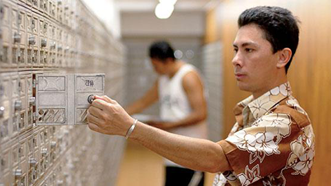
Agence : Cyclone
Client : Fare Rata
Média de diffusion : Youtube
Durée : 02:37
Storyboard
- Storyboard
- 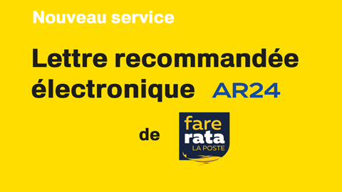
01
- 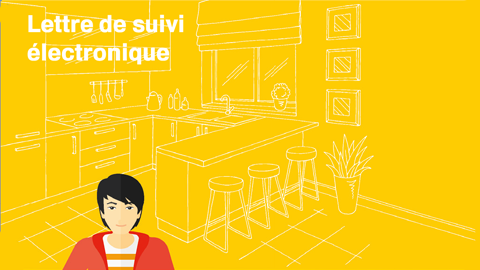
02
- 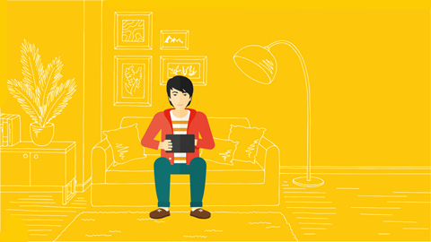
03
04
- 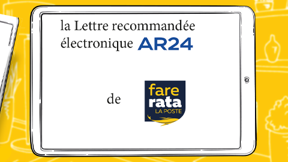
05
- 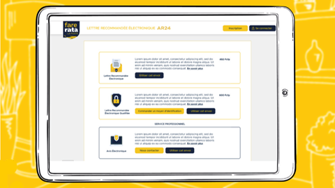
06
- 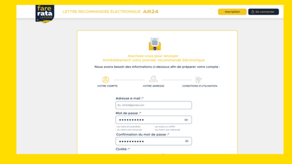
07
- 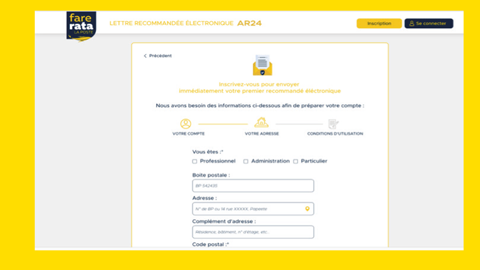
08
- 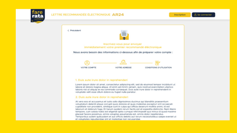
09
- 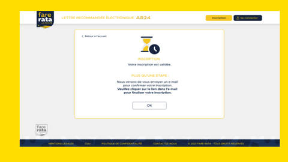
10

11
- 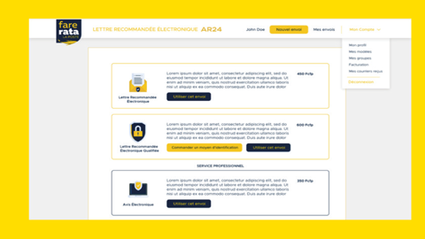
12
- 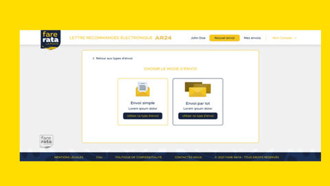
13
- 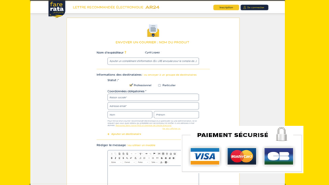
14
- 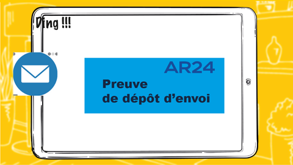
15
- 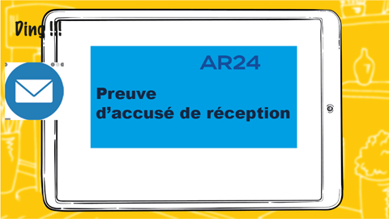
16
- 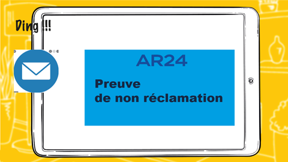
17

18
- 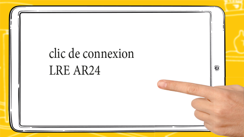
19
- 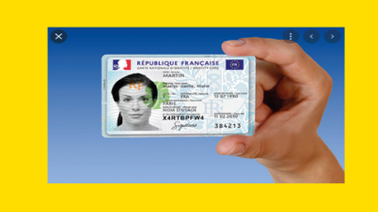
20
- 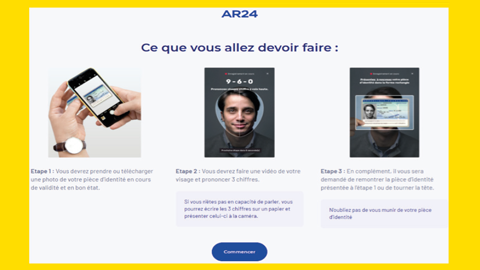
21
- 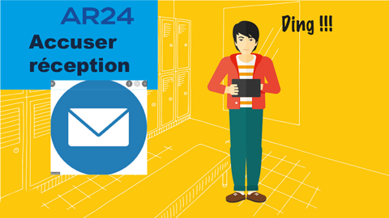
22
- 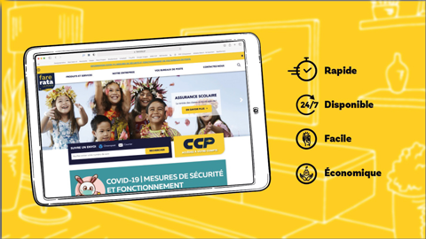
23
- 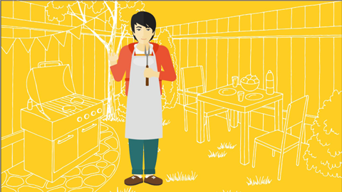
24
- 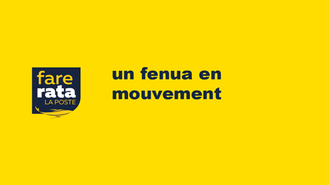
25
 Back to Top
Back to Top